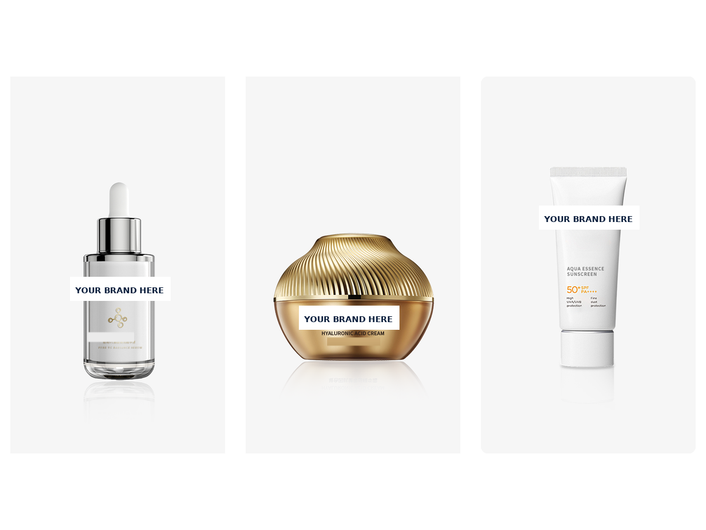

2026年11月6日 · Amy Skin OEM 知识文章
MOQ 500–1,000 到底是什么意思？
MOQ 500–1,000 指的是一个 SKU 要 500–1,000 件——一个配方、一种包装、一个市场。这是该产品的最小大货订单。样品不计入 MOQ，价格按单报价，不固定。

什么是“一个 SKU”？
一个 SKU 就是顾客买到的一个产品：一个配方、一种包装规格、一个标签、一个市场。一支 30 毫升滴管瓶装的维生素 C（Vitamin C）精华，卖到欧盟，就是一个 SKU。同一款精华换了包装，或者换了标签卖到另一个市场，就是另一个 SKU——也需要自己的 500–1,000 件。
可以订两种产品各 250 件来凑够 500 件吗？
不可以。MOQ 500–1,000 是按 SKU 算的，不是按订单总量算的。两种产品各 250 件，就是两个低于起订量的 SKU。如果想做两种产品，每种都要 500–1,000 件。先从你的品牌最出名的那一款产品起步，再加第二款。
MOQ 500–1,000 不包括什么？
- 样品：样品在大货生产前制作，供你确认配方——不计入这 500–1,000 件。
- 固定价格：价格取决于配方、包装与数量，所以按单报价。
- 你所在市场的认证：你所在市场的注册或备案是另外的步骤——见各市场认证。
新品牌应该怎么起步？
从一个 SKU、MOQ 500–1,000 起步：一个主打产品、一个清晰的故事、一个市场。确认样品、确认包装，然后上市。等第一款卖起来了再加第二款——小品牌就是这样成长的，不用囤卖不掉的货。